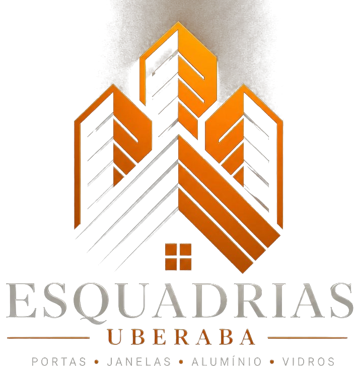

Portfólio
Portas, janelas, fachadas, box e guarda-corpo em alumínio e vidro, entregues em Uberaba e região. Escolha um tipo de obra e toque na foto para ampliar.

Vídeos
Veja de perto o acabamento e o deslizar das portas.
Orçamento
Mande a foto que você gostou pelo WhatsApp e a gente faz igual, sob medida para o seu espaço. Todos os produtos com 5 anos de garantia.
Versão de demonstração preparada pela Zebubit.